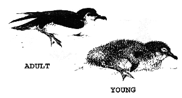
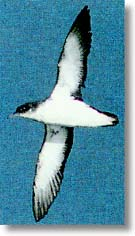

MANX SHEARWATERS


The Manx shearwater (Puffinus puffinus) is a species belonging to a diverse group of birds that spend the majority of their time at sea. They are relatively small, and nest in burrows, mainly on offshore islands like Skomer because of the lack of ground predators. The islands of Skomer and Skokholm hold about half of the worlds population of this species. A survey of these islands in the winter of 1998 suggested that Skomer is home to around 100,000 pairs of these birds. This figure was the result of many hours of dedicated work by the then warden Simon Smith, Christine Barton, Jim Poole and assistant warden Nick Littlewood, who over the course of the winter counted every single burrow on the island. Known % vocal responses of shearwaters to recordings of their calls were then used to calculate numbers on the island, by multiplying out this figure by the number of burrows in island test plots that responded, giving this miraculous figure of 200,000 birds.
On Skomer, most birds nest in quite shallow burrows, especially concentrated around the North Haven area. The birds arrive back at the island in spring after spending the winter out at sea, in the south Atlantic off Brazil, Uruguay and Argentina. A successful pair will generally return to mate with the same partner in the same burrow each year. They lay a single egg, which hatches in mid-July. Not long after hatching the chick may be left alone in the burrow while the parents go out to sea to collect fish and return every 1-7 days to feed the chick, returning only at night.
The shearwater chicks fledge around September time, when they can be seen standing at their burrow entrances exercising their wings. Often they will be distinguishable from adults by some remnants of their grey juvenile fluff amongst their adult plumage. During their development, and prior to fledging, the chicks will reach their peak lifetime weight, exceeding that of their parents. Eventually, the adults stop feeding them; the precise behavioural mechanism behind this is not fully understood. When they have reached the optimum weight and conditions are suitable, the chicks will go out to sea and will not return for some years. Shearwaters are known to have survived to quite well beyond 20 years of age.
Adult shearwaters only come in to land at night for important reasons. They are so well evolved for skilled flight out at sea that they have trouble manoeuvring on the land, and are very vulnerable to predators such as the gulls. Returning by night means that predation losses are far lower as gulls rely heavily on their sight. The best nights to see shearwater on Skomer are overcast nights in July and August when there is little moonlight.